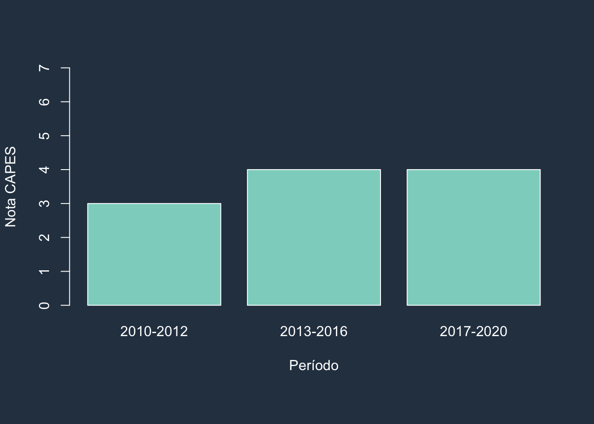
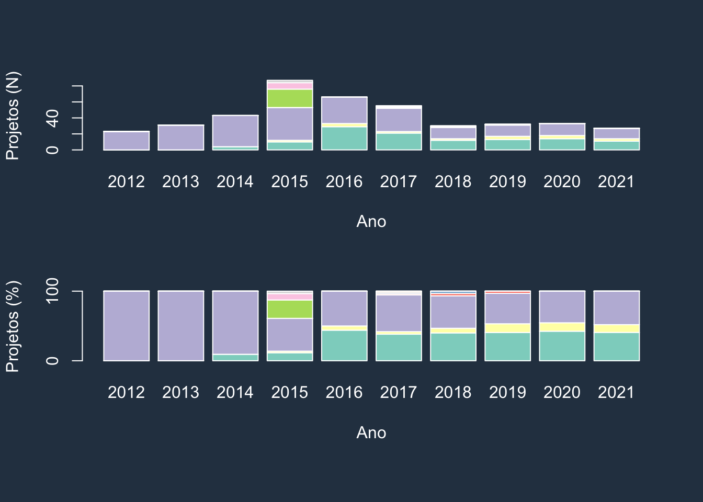
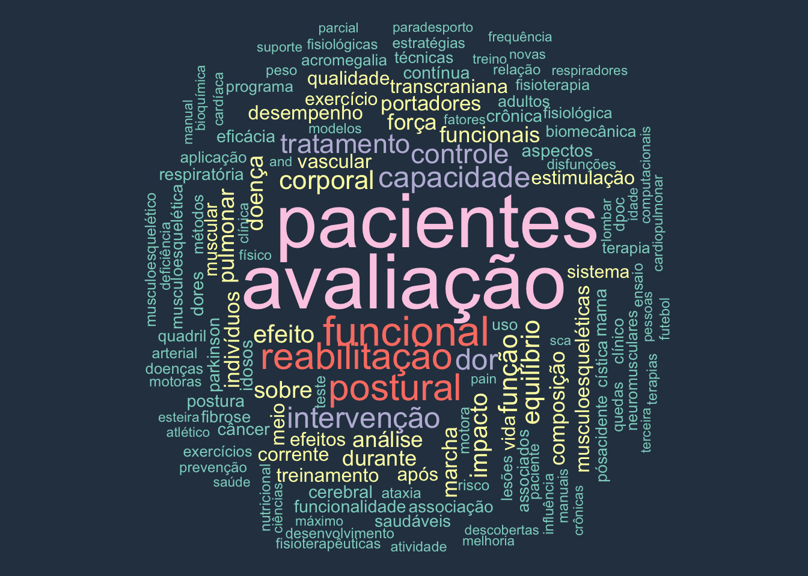
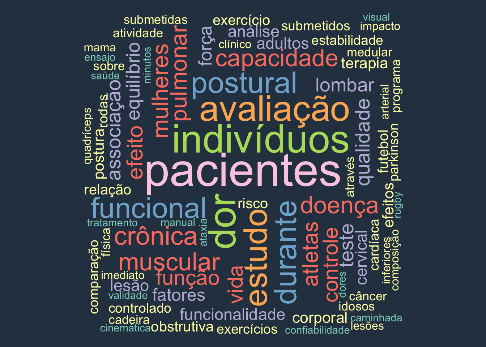
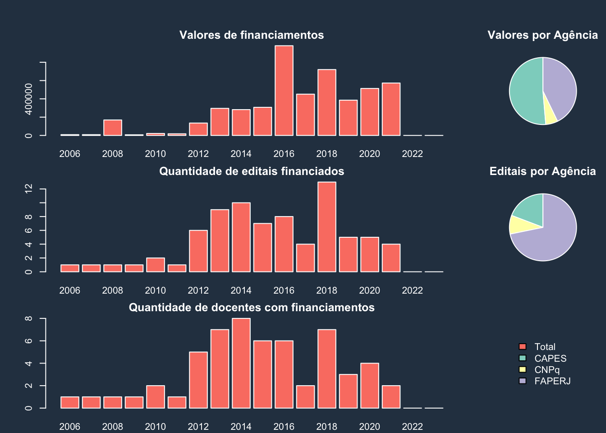
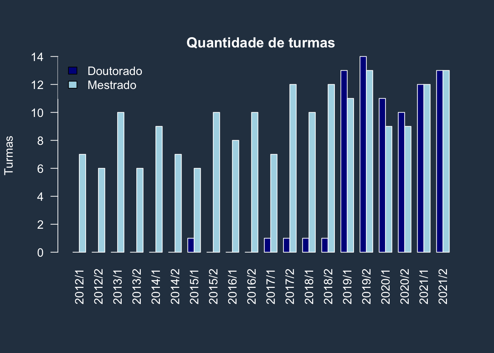
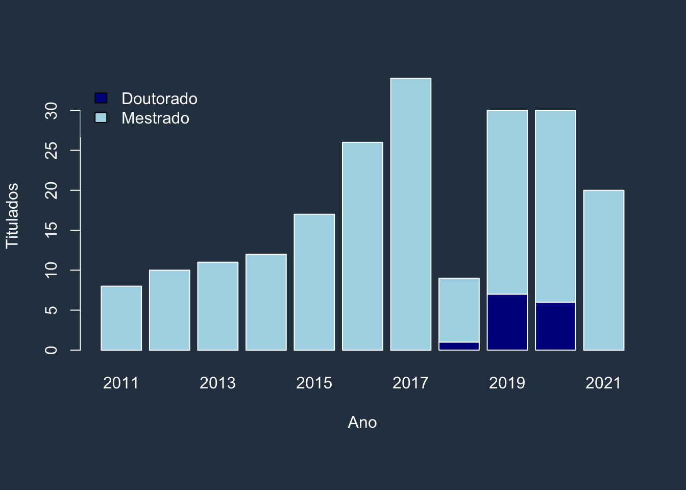
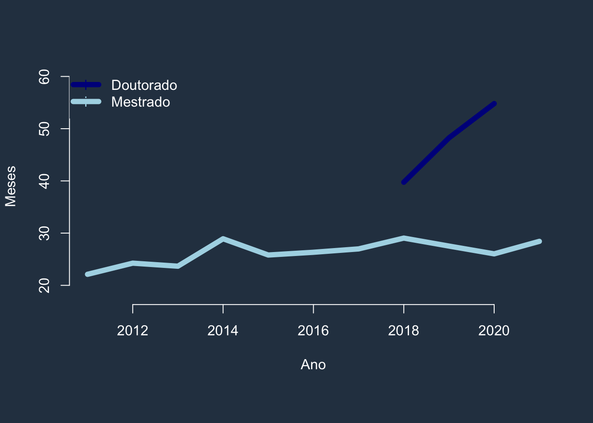
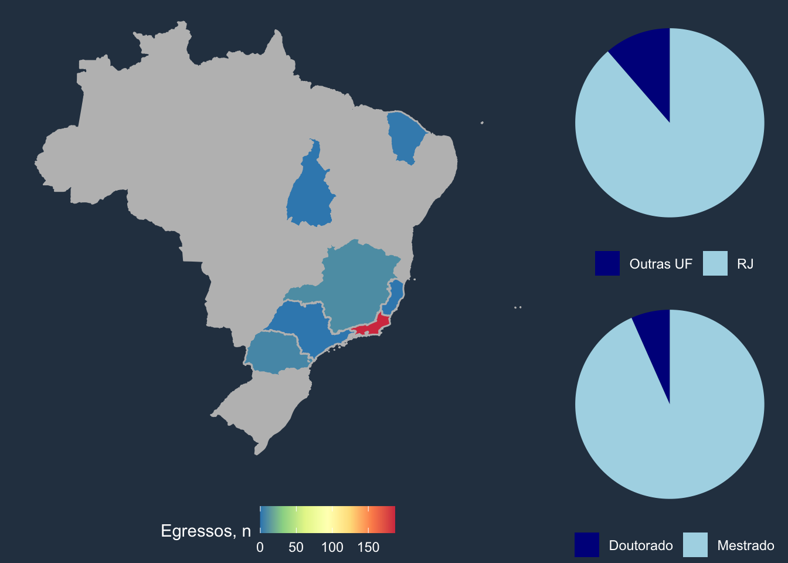

OBSERVATÓRIO CR

O OBSERVATÓRIO CR é uma iniciativa do Programa de Pós-graduação em Ciências da Reabilitação do Centro Universitário Augusto Motta que envolve o registro, o acompanhamento, a análise agregada e estruturada de dados para divulgação transparente de suas atividades, planejamentos, ações e impactos, tornando-os acessíveis à sociedade.
Nota do Programa

Projetos de pesquisa, por linha de pesquisa

Projetos de pesquisa, temas

Trabalhos de conclusão de curso, temas

Financiamentos dos projetos

Disciplinas oferecidas

Discentes

Formação de pessoal de nível superior
Tempo médio de titulação, por ano
Egressos

Fontes dos dados
Nacionais
| Sigla | Fonte | Abrir |
|---|---|---|
| CAPES | Catálogo de Teses e Dissertações | ↗️ |
| CAPES | Coordenação de Aperfeiçoamento de Pessoal de Nível Superior | ↗️ |
| CAPES | Periódicos | ↗️ |
| CAPES | Plataforma Sucupira | ↗️ |
| CAPES | Qualis Periódicos | ↗️ |
| CAPES | Sistema de Concessão de Bolsas e Auxílios | ↗️ |
| CNPq | Conselho Nacional de Desenvolvimento Científico e Tecnológico | ↗️ |
| CNPq | Plataforma Lattes | ↗️ |
| CNPq | Diretório dos Grupos de Pesquisa | ↗️ |
| FAPERJ | Fundação Carlos Chagas Filho de Apoio à Pesquisa do Estado do Rio de Janeiro | ↗️ |
| IBICT | Depósito do Instituto Brasileiro de Informação em Ciência e Tecnologia | ↗️ |
Internacionais
| Sigla | Fonte | Abrir |
|---|---|---|
| Altmetrics | Alternative metrics | ↗️ |
| Elsevier | Scopus | ↗️ |
| ORCID | Open Researcher and Contributor ID | ↗️ |
| Publons | Web of Science | ↗️ |
| SJR | SCImago Journal Rank | ↗️ |
Copyright © 2021 Arthur de Sá Ferreira, PhD, em nome do colegiado do PPGCR-UNISUAM. Todos os direitos reservados. Última atualização em
Arthur de Sá Ferreira is creating websites for sharing science & art. If you enjoyed this content you can buy me a coffee!